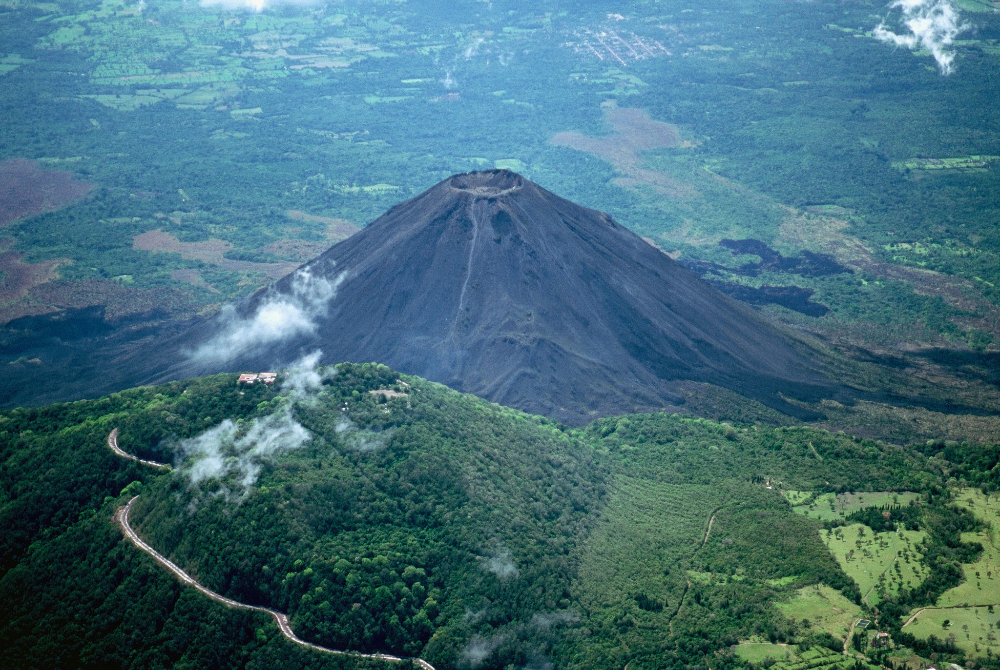

Inicio
Volcanes
Rios
Facebook
TikTok
Instagram
VOLCANES DE EL SALVADOR

VOLCAN DE SANTA ANA
VOLCAN DE SANTA ANA
VOLCAN DE SANTA ANA
VOLCAN DE SANTA ANA
VOLCAN DE SANTA ANA
VOLCAN DE SANTA ANA
VOLCAN DE SANTA ANA